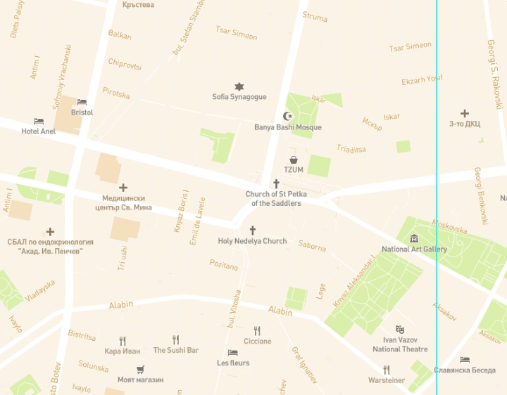

Our Story
Our love story began in London 2017. Anton was trying to make it as a project manager while Cristina was a junior doctor in a nearby hospital. Some flirtatious banter was exchanged back and forth followed by a date in Hyde Parks’ Winter Wonderland, mulled wine and late chat in a tent next to an open fire… well the rest is history! Four years worth of memories and we’ve been frozen on top of the Eifel Tower, rained on in Venice and survived the Canary Islands cuisine. We’ve also called 3 places our home and seriously upped our home coffee game. Last summer Anton organised a picnic in Hyde Park and asked us to dress up as we were to feed the parakeets and you never know when you’ll end up snapping that perfect picture. We “incidentally” wondered of to the same place where our first date took place and there he popped the question… Cristina said YES! We can’t wait for this exciting new chapter to begin!
Carousel with pics
Event Details
Church Ceremony
Sveta Nedelq Church Sofia 4:00 PM

For the special day we invite you to join us in Sveta Nedelq Church at 4 pm, please arrive a few minutes early if you want to be on all the pictures. The origin of the name Sveta Nedelya is rather obscure. It can be translated as either "Holy Sunday", "Saint Nedelya", or even as "Saint Sunday". It’s is a medieval church that has suffered destruction through the ages and has been reconstructed many times. The present building of the temple is among the landmarks of Sofia and it’s also celebrating its 700th anniversary on our wedding day! How about that…
Reception - Pre Drinks
Hotel Balkan Lobby 5:00 PM

Following the church, you will have a few minutes to stretch your legs, join us for the group photos, catch a flower bouquet ;) ... When you are ready you may join us in hotel Balkan (behind the church) for a complimentary drink. This will be your first opportunity to mingle with other guests and get to know them before the reception starts. Go to hotels reception and confirm you are a guest of Cristina and Anton’s wedding. Hotel staff will help you find your way to the other guests and a glass of bubbly.
Reception
Hotel Balkan Serdica 6:00 PM

Duo ea autem tation adipiscing. In graeci vulputate vix. Ad vix dolore labores omnesque. Rebum graeco eu vim. Agam graeco eu eum. Eam ad porro efficiendi conclusionemque, eam stet mentitum expetendis eu. Vis in nullam deleniti. Pri eu praesent elaboraret, ad affert explicari ius, sit vidit perpetua an. No sit eirmod nostrud repudiandae, tota scripta blandit ea eam. In qui suas inciderint, vis tollit latine definiebas in. Eros nostrum albucius eu pri.
Map
Hotel Balkan Serdica 6:00 PM
Duo ea autem tation adipiscing. In graeci vulputate vix. Ad vix dolore labores omnesque. Rebum graeco eu vim. Agam graeco eu eum. Eam ad porro efficiendi conclusionemque, eam stet mentitum expetendis eu. Vis in nullam deleniti. Pri eu praesent elaboraret, ad affert explicari ius, sit vidit perpetua an. No sit eirmod nostrud repudiandae, tota scripta blandit ea eam. In qui suas inciderint, vis tollit latine definiebas in. Eros nostrum albucius eu pri.
Accomodation
As this is a destination event for some of you do bear in mind we are here to help. If you decide to stay in the same hotel as the reception we’d be happy to cover the expense for the night of the wedding and make sure you are getting preferential prices for the rest of the stay.
Presents
Your presence on our special day is the greatest present of all!
However, if you do wish to celebrate with a gift, please be aware this is a destination wedding for us and we will have to ship everything on the other side of Europe.